Controllo di velocità per musicassette
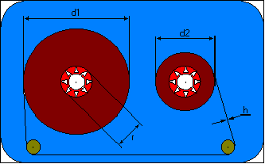
Bologna 22/12/1998
Introduzione
Anche se i supporti magnetici a nastro sono ormai obsoleti per i dati, le musicassette sono ancora molto diffuse.
Altrettanto diffusi sono i lettori. Oltre alla fedeltà di riproduzione penso che un criterio per valutarne la qualità siano la maneggevolezza e la praticità. Il problema fondamentale del supporto a nastro è la lentezza di accesso e la difficoltà di ricerca dei dati. Dopo aver osservato diversi tipi di lettori mi sono reso conto che la meccanica di tutti è basata sullo stesso principio, e che molto spesso anche la realizzazione è identica. Molte case costruttici montano quindi la stessa meccanica e producono di conseguenza dispositivi della medesima qualità. Nel corso di diversi anni ho avuto in riparazione molti registratori a cassetta e penso di avere individuato i loro punti deboli. Un prodotto così diffuso da così tanto tempo è sicuramente il meglio che si possa avere in temini di economicità e qualit&
agrave;. Nonostate questo mi è venuto il dubbio che probabilmente le leggi di mercato avessero schiacciato alla nascita, un prodotto tecnicamente superiore.
Verrà affontato in seguito il progetto di un lettore fondamentalmente diverso da quello tradizionale. Verrà trattata essenzialmente la parte matematica del problema, e si cercherà di stabilire se esistono soluzioni; qualora esistessero (esatte o approssimate), completare il progetto con la realizzazione di un sistema a micropocessore in grado di calcolarle. Il dispositivo avrebbe così una meccanica più semplice, ma un controllore a microprocessore alquanto complesso; ma questo non dovrebbe gravare sui costi vista l'enorme diffusione dei microcontroller.
Il lettore per cassette standard
Il principio di funzionamento dei registratori a cassette classici richiede che il nastro magnetico scorra a contatto con la testina a velocità costante pari a 3 m/min.
Il sistema meccanico che è più in uso, probabilmente l'unico, è composto di due perni e di un sistema chiamato "caps". Quando il lettore è in "play" un perno è messo in rotazione per mezzo di una frizione in modo da sviluppare una coppia costante, l'altro perno è in folle e il "caps", che è a contatto con il nastro, lo trascina a velocità costante. provvede a fare scorrere il nastro a velocità costante.
Il "caps" è costituito da un perno d'acciaio che ruota a velocità costante e da una rotella di gomma che costringe il nastro a l contatto con il perno. Il perno d'acciaio è solidale al volano, un disco pesante messo in moto da una trasmissione a cinghia, e costituisce il punto critico della meccanica in questione.
La parte meccania più esposta ad usura è sicuramente la sede di questo perno d'acciaio, un anello di ottone incastrato al telaio. L'anello si usura per effetto di coppie non assiali causate dal peso del volano stesso, nel caso di un montaggio verticale, o dalla pressione della ruota di gomma, in ogni caso. Gli effetti indesiderati derivanti da questa usura sono oscillazioni parassite che si sommano alla velocità costante; e ben più grave il fatto che il nastro scappa dal "caps" e si avvolge rovinosamente nella ruota di gomma. Quest'ultimo problema deriva dal fatto che il perno non è più in asse con la rotella di gomma.
Il lettore per cassette senza "caps"
Nel seguito verrà presentata una possibile realizzazione del lettore che non faccia uso del sistema "caps" sopra esposto.
Per limitare il più possibile l'usura del nastro si può evitare il contatto con la testina ed eliminare il sistema "caps".
L'idea è quella di semplificare se possibile la parte meccanica e delegare a un sistema a microprocessore i compiti più gravosi. Si può schematizzare la struttura del lettore in questo modo: ai due perni che avvolgono o svolgono le bobine sono collegati rispettivamente due motori e ad ogni perno un encoder ottico.
Se alimentiamo un motore in modo che faccia ruotare un perno a velocità costante, il nastro non scorrerà davanti alla testina a velocità costante perchè il diametro della bobina avvolta cresce nel tempo. Conoscendo le relazioni cinematiche opportune si può pensare di regolare la velocità del motore nel tempo in modo da ottenere una velocità costante del nastro.
Obiettivi
L'obiettivo del progetto è evidentemente quello di migliorare i tempi e le modalità di accesso al nastro.
A tal fine è utile l'esatta misura dei parametri fisici della cassetta, nonché la posizione del nastro. I parametri fisici sono r, h, l; rispettivamente il raggio dei supporti dove è avvolto il nastro, lo spessore del nastro e la lunghezza totale del nastro (proporzionale alla durata).
Il Problema analitico
L'equazione del nastro descrive la lunghezza l di un nastro avvolto su un perno di raggio r, al variare dei giri a (rad), noto lo spessore del nastro h.
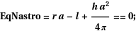
Dall'equazione del nastro si ricava quella della cassetta.
Questa volta il nastro che viene svolto da un perno, è riavvolto su un perno identico al primo. L' equazione che segue lega i giri del perno 1 (a1), con quelli che compie il perno 2 (a2), note le costante r, h, l.
Si noti che questa volta l è una costante: è infatti l'intera lunghezza del nastro.
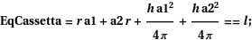
Queste due equazioni costituiscono il modello del sistema.
Noti i parametri fisci (r,h,l) è possibile implementare un controllore che regoli la velocità di avvolgimento in modo che il nastro scorra a velocità costante.
Il problema è misurare i parametri. Infatti le cassette in commercio sono molto differenti tra loro:
l = 10 .. 400 metri
h = 0.01 .. 0.02 mm
r = 10 .. 14 mm.
Se il lettore è equipaggiato dei soli due encoder ottici il problema non è risolubile analiticamente.
Ulterirori informazioni sul sistema si posso ricavare da considerazioni di carattere più generale:
i parametri sono largamente variabili ma hanno delle relazioni tra loro (ad es. i nastri lunghi sono i più sottili);
esistono dei vincoli matematici che limitano la variabilità dei parametri che nascono dal fatto che le dimensioni della cassetta sono fissate e così limitano il diametro massimo che possono assumere le bobine completamente avvolte.
Condizioni al contorno: limiti di capienza
La condizione più immediata riguarda il fatto che, a nastro completamente riavvolto, la bobina deve entrare nel supporto la cui dimensione è costante e nota (circa 42.5 mm).Un' altra condizione nasce dalla misura dello spazio libero tra le due bobine.Questo non sarà costante, ma varierà in funzione di a.
Spazio tra le bobine
Esprimiamo questa distanza in funzione di : r, h, l : i parametri fisici;
a: la posizione del nastro;
d: la distanza tra gli assi dei due perni. Chiamiamo con g la distanza da determinare.Impostiamo un sistema di equazioni che, una volta risolte, daranno un' espressione simbolica di g.In un secondo tempo sostituiremo a g i valori numerici di una cassetta reale.
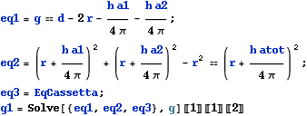
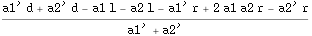
Prima equazione: espressione di g. Seconda espressione: osservando una faccia della cassetta, esprime la conservazione della somma delle aree delle due bobine. In altre parole il nastro che si srotola dal perno 1 va a finire sul perno 2, il disco di ingombro della bobina 1 si riduce e quello 2 si accresce. g1 è la funzione che ci interessa, ma prima di rappresentarla dobbiamo eliminare a1 ed a2. Sfrutteremo l'equazione della cassetta.
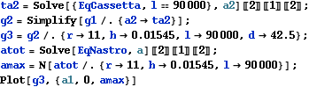
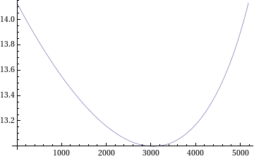
Primo procedimento
Rimandiamo per ora lo studio sulle tecniche per misurare in automatico i parametri fisici di una casseta sconosciuta.
Supponendo di avere a disposizione in un database i parametri fisici (r,h,l) di un certo numero di cassette campione, si può pensare di rappresentare questi dati come un insieme di punti nello spazio tridimensionale (r,h,l).
Due misure del rapporto "diametro bobina 1 / diametro bobina 2", effettuate a distanza step una dall'altra forniscono i numeri M1 ed M2.
Utilizzando l'equazione della cassetta, l'espressione analitica del diametro delle bobine, e introducendo i valori numerici delle costanti M1, M2, step, si ricava una equazione nelle tre incognite r, h, l.
L'equazione di cui sopra si può rappresentare nello stesso spazio come una superficie.
Si può ora studiare l'appartenenza dei punti alla superficie.
Se siamo fortunati un solo punto apparterrà alla superficie: avremo in questo modo individuato la cassetta incognita dalla sola misura di M1, M2.
Resta da implementare una procedura snella che misuri le distanze tra i punti e la superficie.
Solo conoscendo queste distanze, infatti si può pensare di implementare un algoritmo numerico in vista di una realizzazione pratica del dispositivo.
Solo conoscendo l'ordine di grandezza di queste distanze si può avere un'idea degli errori che si possono tollerare.
Gli errori derivanti dagli algoritmi di calcolo dovrebbero essere contenibili ad arbitrio. Sicuramente sarà più difficile controllare gli errori di misura.
I valori contenuti nel database dovranno contenere anche i rispettivi errori, e lo stesso vale per i due numeri M1 ed M2. Questo significa che i punti saranno piuttosto delle regioni di spazio (parallelepipedi o ellissoidi), e la superficie sarà la regione di spazio delimitata da due superfici.
La superficie viene approssimata da un piano.
Il piano che viene scelto è quello passante per i punti { px, py, sup[ px, py] },
{ px, sup[ px, pz], pz} e { sup[ py, pz], py, pz}, dove sup[ ] è di volta in volta l'equazione della superficie risolta rispetto a ciascuna delle variabili.
La risoluzione simbolica di queste equazioni è troppo complessa; si sostituiscono allora all' eq tutti i valori noti e si risolve numericamente l'equazione in una variabile così ottenuta.
La procedura fallisce quando la soluzione dell'equazione rispetto ad r non esiste; tuttavia questo non è un problema perchè accade per punti lontani dalla superfcie.
questo accade quando i punti sono troppo "alti" e suprano il vertice del praboloide.
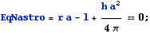
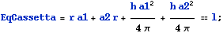
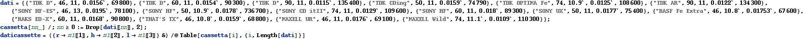
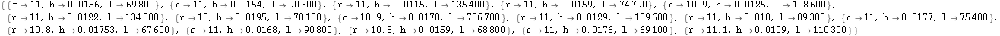
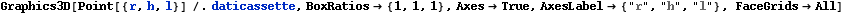
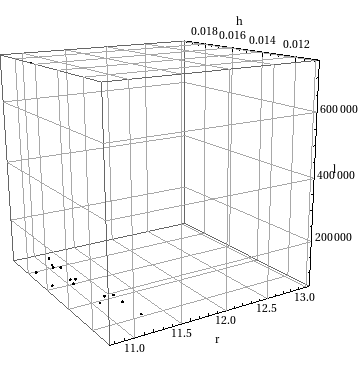
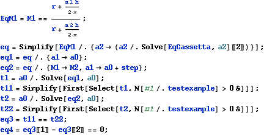
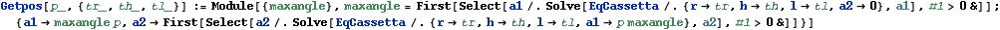
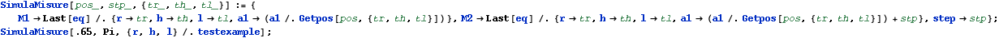
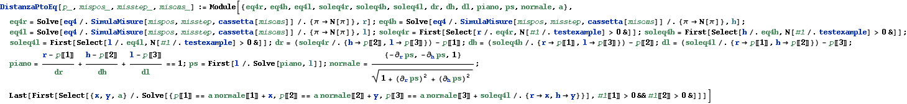
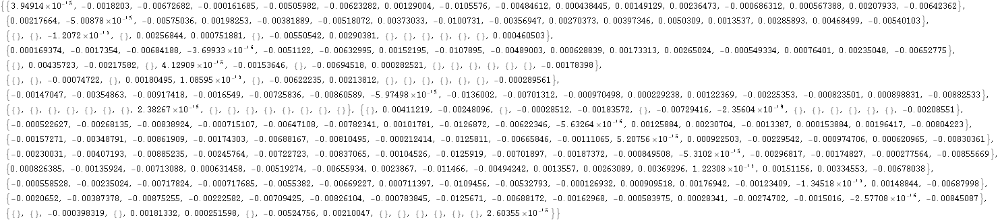
Secondo procedimento
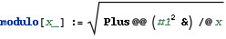
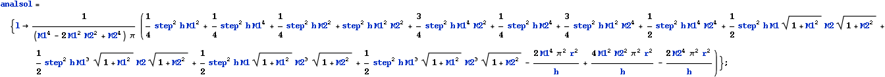
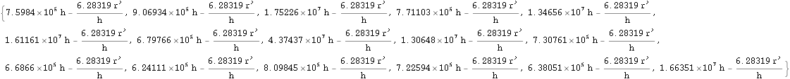
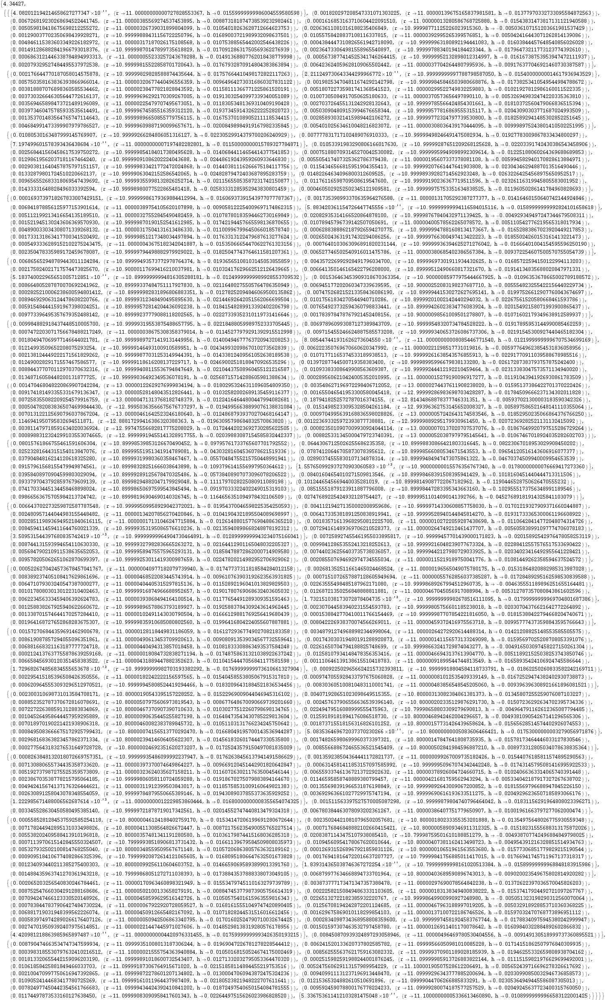
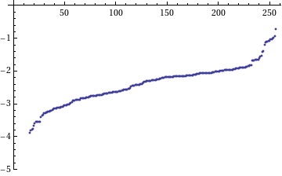
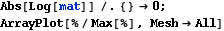
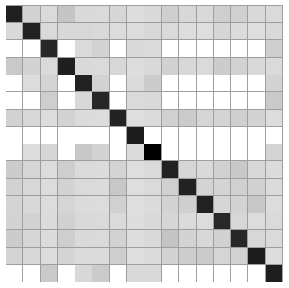